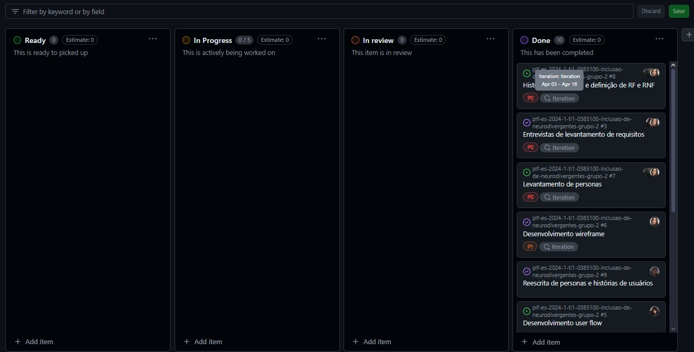

Introdução
Nosso projeto se chama HabitR, somos uma equipe formada por 4 pessoas, todos somos Devs e estudantes de Engenharia de Software na Puc Minas - Praça da Liberdade. O projeto tem foco em solucionar problemas de inclusão de neuro divergentes.
Informações Gerais
- Projeto: HabitR
- Repositório GitHub: Template Trabalho Interdisciplinar
- Membros da equipe:
Contexto
Para o desenvolvimento desse projeto, visamos melhorar a qualidade de vida e inserção de pessoas que possuem TDAH (Transtorno de Déficit de Atenção) na sociedade. Partindo do pressuposto de que a sociedade atual nem sempre é adaptada para acolher essas pessoas, pretendemos desenvolver uma plataforma específica que atenda às suas necessidades únicas.
Problema
No contexto contemporâneo, as pessoas neurodivergentes, em especial aquelas diagnosticadas com Transtorno de Déficit de Atenção e Hiperatividade (TDAH), enfrentam uma série de desafios em diferentes aspectos de suas vidas. Desde o desempenho acadêmico até as relações interpessoais e a inserção no mercado de trabalho, os sintomas característicos do TDAH, como instabilidade profissional, procrastinação, dificuldade de concentração e falta de organização, impactam significativamente a qualidade de vida desses indivíduos.
A falta de soluções específicas e adequadas para pessoas com TDAH agrava ainda mais esses desafios, dificultando seu funcionamento eficaz em diferentes contextos sociais e profissionais. As empresas e organizações também enfrentam obstáculos ao lidar com funcionários que têm TDAH, incluindo questões relacionadas ao desempenho no trabalho e à gestão de equipes.
Diante desse cenário, é crucial desenvolver soluções inovadoras que atendam às necessidades específicas das pessoas com TDAH e promovam sua inclusão efetiva na sociedade. Por meio de uma plataforma dedicada, espera-se oferecer suporte personalizado e ferramentas que auxiliem esses indivíduos a superar os desafios impostos pelo transtorno e a alcançar seu pleno potencial em diferentes áreas da vida.
Objetivos
O cerne do objetivo desse projeto reside na criação de uma plataforma dedicada, um espaço virtual que não apenas reconhece, mas também incorpora as particularidades e necessidades únicas das pessoas com TDAH. Este espaço propõe-se a ser muito mais do que uma simples ferramenta de organização; é um ambiente pensado e construído para oferecer suporte personalizado e ferramentas especializadas, para ajudar essas pessoas a terem um controle maior de seu foco e tarefas diárias.
A importância dessa plataforma específica reside no fato de que as soluções genéricas disponíveis muitas vezes não atendem efetivamente às demandas desses indivíduos. Ao oferecer um ambiente adaptado, busca-se minimizar os impactos negativos que a falta de soluções adequadas traz para a vida dessas pessoas, incluindo a queda na autoestima e a síndrome do impostor decorrente da falta de apoio.
Além disso, entende-se que as empresas e organizações enfrentam desafios específicos ao lidar com funcionários que têm TDAH. Por isso, nossa plataforma não se limita apenas ao âmbito pessoal, mas também visa aprimorar a performance e a gestão pessoal desses profissionais no ambiente de trabalho.
A colaboração ativa dos usuários ao longo do desenvolvimento é um pilar fundamental do projeto. Tendo como base que ninguém compreende melhor as necessidades e desafios do que aqueles que vivenciam o TDAH diariamente. Por isso, buscamos ouvir e incorporar suas experiências e perspectivas em todas as etapas do processo.
Através dessa plataforma, esperamos não apenas reduzir o estresse e proporcionar uma gestão mais eficiente de tarefas e rotinas, mas também capacitar as pessoas com TDAH a alcançarem seu potencial máximo em todas as áreas da vida. Nossa visão é de uma sociedade mais inclusiva, onde todos, independentemente de suas diferenças, possam prosperar e contribuir plenamente.
Justificativa
Atualmente, existem muitas plataformas e aplicativos voltados para o controle de hábitos e tarefas, mas muito poucas são direcionadas ao público neurodivergênte. As principais queixas levantadas por essa parcela da população foram a dificuldade em direcionar o foco e em concluir e controlar o fluxo de tarefas, que por serem as mais agravantes, serão o foco para o desenvolvimento do projeto.
Através de uma plataforma direcionada, é possível proporcionar um ambiente adaptado às particularidades do TDAH, oferecendo estratégias e recursos específicos para auxiliar na organização, na gestão de tempo, no desenvolvimento de habilidades socioemocionais e na melhoria do desempenho acadêmico e profissional. Além disso, esse software pode facilitar a comunicação e a colaboração entre os usuários, promovendo a troca de experiências e o apoio mútuo.
Em suma, a criação de um software direcionado para a resolução dos desafios enfrentados pelas pessoas com TDAH é não apenas uma necessidade premente, mas também uma oportunidade de promover a inclusão e o bem-estar desses indivíduos, capacitando-os a alcançar seu potencial máximo e contribuir plenamente para a sociedade.
Público-alvo
O público-alvo do projeto são pessoas com Transtorno de Déficit de Atenção e Hiperatividade (TDAH), que podem ser crianças, adolescentes ou adultos que enfrentam dificuldades decorrentes desse transtorno em várias áreas da vida, indiferente do gênero.
De acordo com estudos renomados, como o realizado por Faraone et al. (2015)¹, o TDAH é um transtorno neurobiológico que afeta a capacidade de atenção, concentração e controle de impulsos. Outro estudo relevante, conduzido por Barkley (2006)², destaca que o TDAH pode impactar significativamente o desempenho acadêmico, profissional e as relações interpessoais dos indivíduos afetados.
O público-alvo também inclui empresas e organizações que lidam com funcionários que têm TDAH. Artigos como o de Halmøy et al. (2009)demonstram os desafios enfrentados por empresas na gestão de equipes e no desempenho no trabalho de indivíduos com TDAH.
Concepção (Design Thinking)
Durante o processo de descoberta do projeto utilizamos diversas estratégias para conseguir compreender a situação do nosso público alvo, fizemos entrevistas qualitativas, Matriz de Alinhamento CSD, definição de personas, brainstorming, etc. Com essa compreensão em mãos e após algumas reuniões em grupo para definir a maneira de expor nossas ideias para os clientes, conseguimos firmar uma base de projeto e especificações. O constante contato dos membros da equipe entre si e com os clientes foi crucial para o desenvolvimento do estado atual. Abaixo seguem as etapas do processo.
Apresente o processo de discovery do projeto. Com foco na experiência do usuário, esse processo abrange a compreensão do contexto do problema e das características do usuário, a definição do problema, a geração de ideias, a prototipagem e a elaboração de uma proposta de solução
Processo de Design Thinking
O arquivo que se segue apresenta o resultado desse processo.
Apresente o processo de Design Thinking realizado pelo grupo e documentado por meio do software Miro. No documento apresentado, devem ser incluídos: (1) a matriz CSD, (2) o mapa de stakeholders, (3) as personas, (4) as respectivas propostas de valor e (5) o processo de ideação identificando as ideias levantadas e sua priorização.
Especificações do Projeto
Os usuários mostraram com grande clareza quais funções do aplicativo seriam mais úteis para eles, dessa forma, com base nas histórias de usuário e os outros detalhes das entrevistas, o entendimento e a criação dos requisitos do projeto foi bem fluida. Abaixo segue as histórias e requisitos.
Apresente as especificações do projeto, incluindo as histórias de usuário e os requisitos funcionais e não funcionais.
Histórias de Usuários
Com base na análise das personas foram identificadas as seguintes histórias de usuários:
Apresente aqui as histórias de usuário que são relevantes para o projeto de sua solução. As Histórias de Usuário consistem em uma ferramenta poderosa para a compreensão e elicitação dos requisitos funcionais e não funcionais da sua aplicação. Se possível, agrupe as histórias de usuário por contexto, para facilitar consultas recorrentes à essa parte do documento.
| EU COMO... | QUERO/PRECISO... | PARA... |
|---|---|---|
| Estudante de Eng. Mecatronica | Me organizar melhor | Ter melhor desempenho no trabalho/faculdade |
| FullStack Dev | Manejar melhor o tempo | Ter mais tempo livre e controle de tarefas |
| Estudante em Eng. de Software | Minimizar o efeito do TDAH | Melhorar relações profissionais e pessoais |
| Estudante de Computação | Avisos e lembretes | Não se esquecer de obrigações e compromissos |
Requisitos
As tabelas que se seguem apresentam os requisitos funcionais e não funcionais que detalham o escopo do projeto.
Com base nas Histórias de Usuário, enumere os requisitos da sua solução. Classifique esses requisitos em dois grupos:
- Requisitos Funcionais (RF): correspondem a uma funcionalidade que deve estar presente na plataforma (ex: cadastro de usuário).
- Requisitos Não Funcionais (RNF): correspondem a uma característica técnica, seja de usabilidade, desempenho, confiabilidade, segurança ou outro (ex: suporte a dispositivos iOS e Android).
Lembre-se que cada requisito deve corresponder à uma e somente uma característica alvo da sua solução. Além disso, certifique-se de que todos os aspectos capturados nas Histórias de Usuário foram cobertos.
Requisitos Funcionais
| ID | Descrição do Requisito | Prioridade |
|---|---|---|
| RF-001 | Permitir ao usuário cadastrar novas tarefas | ALTA |
| RF-002 | Aplicativo deve ter sistema de ranqueamento | MÉDIA |
| RF-003 | Aplicativo deve automatizar tarefas | ALTA |
| RF-004 | Aplicativo deve gerar gráfico de desempenho | ALTA |
| RF-005 | Deve ser possível postar conteúdos com fotos e curtidas no app | BAIXA |
| RF-006 | Aplicativo deve ter um bloco de notas | BAIXA |
| RF-007 | Aplicativo deve ter opção de ocultar elementos de navegação | ALTA |
| RF-008 | Gamificação com sistema de pontos | MÉDIA |
Requisitos Não-Funcionais
| ID | Descrição do Requisito | Prioridade |
|---|---|---|
| RNF-001 | O sistema deve ser focado em dispositivos móveis | ALTA |
| RNF-002 | O aplicativo deve ocupar pouca memória | MÉDIA |
| RNF-003 | O aplicativo deve ter uma interface minimalista | ALTA |
| RNF-004 | O aplicativo deve ter descrição especificando que é para neurodivergentes | BAIXA |
| RNF-005 | O aplicativo deve ter processamento rápido | MÉDIA |
| RNF-006 | O sistema não deve perder as informações dos usuários | MÉDIA |
| RNF-007 | Aplicativo deve enviar notificações de push | ALTA |
| RNF-008 | Aplicativo deve possuir Darkmode | ALTA |
Projeto de Interface
O aplicativo vai proporcionar ao usuário uma tela de login, uma tela inicial onde ele poderá ver suas tarefas divididas por horário do dia e dias da semana, dentro dessas divisões será possível modificar, adicionar e visualizar com mais detalhes as tarefas.As tarefas terão ícones específicos para identificação por meio de categorias.Os usuários frisaram que o aplicativo deveria ser minimalista então a opção de esconder a navbar está disponível. Os usuários também demonstraram interesse em uma tela como um bloco de notas então essa tela também existirá, as coisas escritas no bloco não serão salvas pelo aplicativo. Seguem abaixo os modelos para visualização.
Apresente a ideia de interface que está sendo prevista para o projeto. Inclua os wireframes, o user/screen flow e o protótipo interativo.
User/Screen Flow e Protótipo interativo
Artefatos relacionados com a interface e a interacão do usuário na solução proposta.
O fluxo de usuário (User Flow) é uma técnica que permite ao desenvolvedor mapear todo fluxo de telas do site ou app. Essa técnica funciona para alinhar os caminhos e as possíveis ações que o usuário pode fazer junto com os membros de sua equipe. 
Um protótipo interativo apresenta o projeto de interfaces e permite ao usuário navegar pelas funcionalidades como se estivesse lidando com o software pronto. Veja o exemplo a seguir.

Wireframes
Protótipo de telas do sistema em baixa fidelidade (rascunhos).
Os Wireframes são protótipos das telas da aplicação usados em design de interface para sugerir a estrutura de um site web e seu relacionamentos entre suas páginas. Um wireframe web é uma ilustração semelhante ao layout de elementos fundamentais na interface. 
Metodologia
O grupo utilizou de metodologia ágil o scrum com a equipe sendo auto organizada, assim não tínhamos Scrum Master e PO, que são os padrões do Scrum, porque todos os membros são desenvolvedores. A produtividade e eficiência do grupo só pode ser alcançada pela forma como utilizamos as ferramentas disponíveis e pelo dinamismo da gestão de projetos que foi bem fluida para toda equipe. Seguem com mais detalhes os processos.
Nesta parte do documento, você deve apresentar a metodologia adotada pelo grupo, descrevendo o processo de trabalho baseado nas metodologias ágeis, a divisão de papéis e tarefas, as ferramentas empregadas e como foi realizada agestão de configuração do projeto via GitHub.
Coloque detalhes sobre o processo de Design Thinking e a implementação do Framework Scrum seguido pelo grupo. O grupo poderá fazer uso de ferramentas on-line para acompanhar o andamento do projeto, a execução das tarefas e o status de desenvolvimento da solução.
Ferramentas
Relação de ferramentas empregadas pelo grupo durante o projeto.
Liste as ferramentas empregadas no desenvolvimento do projeto, justificando a escolha delas, sempre que possível. Inclua itens como: (1) Editor de código, ferramentas de comunicação, ferramentas de diagramação, plataformas de hospedagem, entre outras.
| Ambiente | Plataforma | Link de Acesso |
|---|---|---|
| Processo de Design Thinking | Miro | https://miro.com/app/board/uXjVKdAiZcI=/ |
| Repositório de código | GitHub | https://github.com/ICEI-PUC-Minas[...] |
| Editor de código | VisualStudioCode | https://code.visualstudio.com |
| Protótipo Interativo | Figma | https://www.figma.com/file/[...] |
| Comunicação Interna | Discord | https://discord.com |
| Comunicação Mista (Equipe e Cliente) | Google Meet | https://meet.google.com |
Gestão do Projeto
Divisão de papéis no grupo e apresentação da estrutura da ferramenta de controle de tarefas.
Nosso controle de tarefas com o Projects do GitHub

O grupo é formado de 4 membros onde todos são desenvolvedores, a equipe é auto organizada, então as tarefas foram divididas com base em experiência e interesse nas próprias. Assim foi divido que a Bruna desenvolveria o wireframe, a Penélope o User Flow e eu(Cauã) e a Maria ficaríamos com a documentação. Mesmo definindo essas tarefas, todos solicitamos ajuda para os membros, em ideias de design, correções ortográficas e teste de compreensão por exemplo.
*"Projects" Mostra um exemplo do nosso controle de tarefas
Controle de Versão
Estrutura do fluxo de trabalho no ambiente do GitHub.
Esse é um exemplo de como foi a gestão dentro do GitHub
Como explicado na gestão de projetos,o dinamismo na forma como os membros da equipe trabalharam fez com que os horários os quais estávamos concluindo as atividades e tarefas necessárias fossem muito diferentes para cada um. Dessa forma, todas as mudanças ocorridas foram commitadas diretamente no branch Master. Decidimos seguir um caminho com pequenos passos de cada vez, por isso toda implementação foi dividida para que se pudesse saber exatamente o que mudou e quando mudou, o que ajudou bastante a evitar problemas no gerenciamento de issues pois existiam pouquíssimas dessas que já eram resolvidas após uma reunião da equipe (nos casos necessários).
*"GitHub" mostra um exemplo.
Solução
Esta seção apresenta todos os detalhes da solução criada no projeto.
Apresente cada uma das funcionalidades que a aplicação fornece tanto para os usuários quanto aos administradores da solução.
Inclua, para cada funcionalidade, itens como: (1) titulos e descrição da funcionalidade; (2) Estrutura de dados associada; (3) o detalhe sobre as instruções de acesso e uso.
Video do Projeto
O vídeo a seguir traz uma apresentação do problema que a equipe está tratando e a proposta de solução.
O video de apresentação é voltado para que o público externo possa conhecer a solução. O formato é livre, sendo importante que seja apresentado o problema e a solução numa linguagem descomplicada e direta.
Utilize o recurso de compartilhamento via embed e inclua o vídeo logo abaixo.
...... COLOQUE AQUI O SEU VIDEO ......
Funcionalidades
Esta seção apresenta as funcionalidades da solução.
Apresente cada uma das funcionalidades que a aplicação fornece tanto para os usuários quanto aos administradores da solução.
Inclua, para cada funcionalidade, itens como: (1) titulos e descrição da funcionalidade; (2) Estrutura de dados associada; (3) o detalhe sobre as instruções de acesso e uso.
Funcionalidade 1 - Cadastro de ContatosEXEMPLO
Permite a inclusão, leitura, alteração e exclusão de contatos para o sistema
- Estrutura de dados: Contatos
- Instruções de acesso:
- Abra o site e efetue o login
- Acesse o menu principal e escolha a opção Cadastros
- Em seguida, escolha a opção Contatos

Estruturas de Dados
Descrição das estruturas de dados utilizadas na solução com exemplos no formato JSON.
Apresente as estruturas de dados utilizadas na solução tanto para dados utilizados na essência da aplicação quanto outras estruturas que foram criadas para algum tipo de configuração
Nomeie a estrutura, coloque uma descrição sucinta e apresente um exemplo em formato JSON.
Estrutura de Dados - UsuáriosEXEMPLO
Informações dos usuários do aplicativo para login e identificação
{
"id": "5632",
"name": "Gabriel",
"profilePhotoUrl": "https://i.pinimg.com/564x/60/0e/cd/600ecd4a3aed586febbb92918e39fce6.jpg",
"email": "gabriel@mail.com",
"password": "gabriel123",
"contacts": [
5633
]
}
Estrutura de Dados - UsuáriosEXEMPLO
Registro dos usuários do sistema utilizados para login e para o perfil do sistema
{
id: "eed55b91-45be-4f2c-81bc-7686135503f9"
email: "admin@abc.com"
id: "eed55b91-45be-4f2c-81bc-7686135503f9"
login: "admin"
nome: "Administrador do Sistema"
senha: "123"
}
Estrutura de dados - Likes
Informações do sistema de curtidas
{
"id": "78219",
"postId": 56715,
"userId": 5640
}
Estrutura de dados - Comentários
Registro dos comentarios das postagens
{
"id": "47385",
"userId": 5634,
"postId": 56715,
"comment": "I need this abs"
}
Estrutura de dados - Postagens
Registro das inrformações das postagens
{
"id": "56715",
"userId": 5638,
"content": "Going to gym!",
"photoUrl": "https://i.pinimg.com/564x/e6/fc/40/e6fc40ac5b7883b4ae8112634feeccd5.jpg"
}
Estrutura de dados - Categorias
Informações das categorias das tarefas
{
"id": "1",
"name": "Saúde Pessoal"
}
Estrutura de dados - Pontuação
Informações sobre a lógica de pontuação das tarefas
{
"id": 1,
"categoryId": 1,
"points": 450
}
Módulos e APIs
Esta seção apresenta os módulos e APIs utilizados na solução.
Apresente os módulos e APIs utilizados no desenvolvimento da solução. Inclua itens como: (1) Frameworks, bibliotecas, módulos, etc. utilizados no desenvolvimento da solução; (2) APIs utilizadas para acesso a dados, serviços, etc.
Images:
- Pexels - https://www.pexels.com/api/
Fonts:
- Icons Font Face - https://fontawesome.com/
- Google Fontshttps://fonts.google.com
- Iconfinderhttps://www.iconfinder.com
Scripts:
- Bootstrap 5 - https://getbootstrap.com/docs/5.3/
- Bootstrap 4 - http://getbootstrap.com/
- ChartJs - https://www.chartjs.org
FAQ
Perguntas e respostas comuns associadas ao projeto.
Apresente uma lista de perguntas e respostas comuns associadas ao projeto. Inclua perguntas como: (1) detalhes de acesso e uso do projeto; (2) informações sobre a instalação e configuração da aplicação; (3) questões sobre a manutenção da aplicação; (4) detalhes sobre a integração da aplicação com outros sistemas; (5) questões sobre a segurança da aplicação.
Referências Bibliográficas
Esta seção apresenta as referências bibliográficas utilizadas no projeto.
Apresente as referências bibliográficas utilizadas no projeto. Inclua itens como: (1) livros, artigos, tutoriais, etc. utilizados no desenvolvimento da solução; (2) links para sites, blogs, etc. utilizados no desenvolvimento da solução.
...... COLOQUE AQUI O SEU TEXTO ......